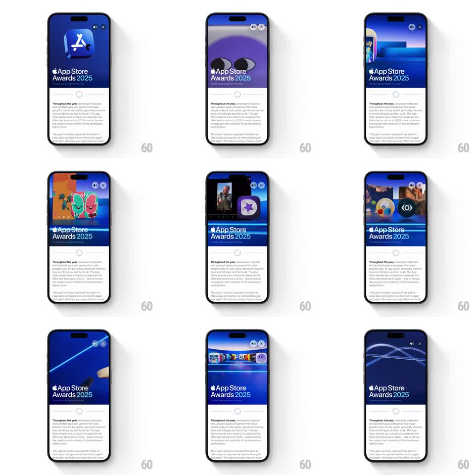

Media
Frame-by-frame

Rebuild this component 1:1: an App Store editorial card ("App Store Awards 2025") whose header is an autoplaying inline video - a fast-paced 3D showcase cycling through award-winning app artwork - with mute and close controls floating on the video's top corner.

Rebuild this component 1:1: an App Store editorial card ("App Store Awards 2025") whose header is an autoplaying inline video - a fast-paced 3D showcase cycling through award-winning app artwork - with mute and close controls floating on the video's top corner.
## Integration
Integration: stack-agnostic spec - springs given as stiffness/damping, timed motions as duration + curve; map every value to your framework and animation library of choice.
## Scene
Editorial card: video header (16:9-ish, fills card width), white title block overlapping the video's bottom edge with the Apple logo + "App Store Awards 2025", then article body text below. Video controls (speaker mute toggle, X close) sit top-right on the video in frosted circular buttons.
## Motion spec
Pattern: ambient inline media.
- Video autoplays muted on scroll into view (threshold ~50%), pauses when scrolled out.
- Controls fade in on card tap (150ms) and auto-hide after 3s of no interaction.
- The card itself is still; all motion lives inside the video - the showcase edit inside uses quick 400-600ms cuts between 3D app icon vignettes on a deep blue gradient stage.
- Close (X): card collapses to a compact non-video state, 300ms height animation, ease-in-out.
## Calibration
- The video is content, not chrome - never add parallax or hover motion to the card around it.
- Control buttons: 36px circles, frosted (backdrop blur), icon 14px, opacity 90%.
## Reduced motion
Video shows its poster frame; play only on explicit tap.
## Don't miss
- Title block overlaps the video by ~20% of its height - that overlap is the editorial look.
- Mute state persists across cards.